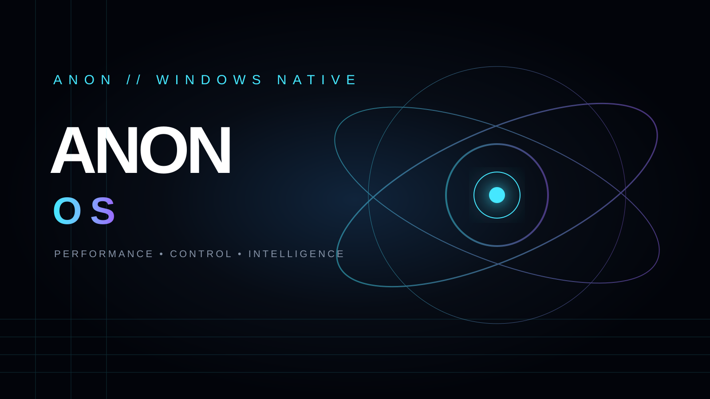
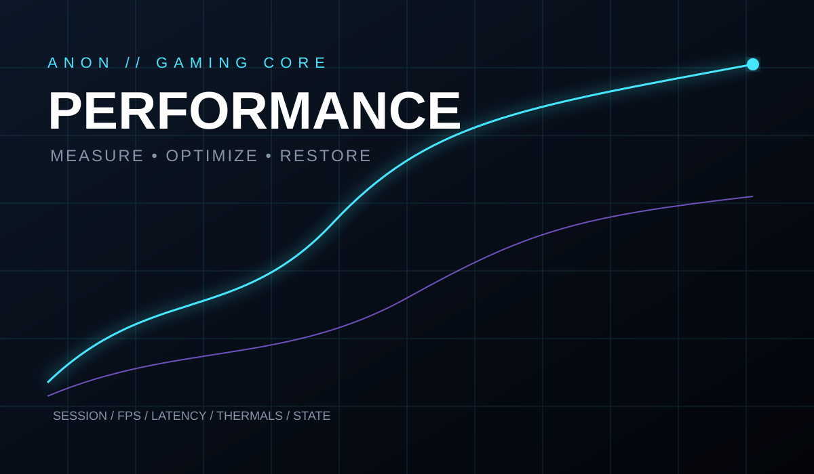
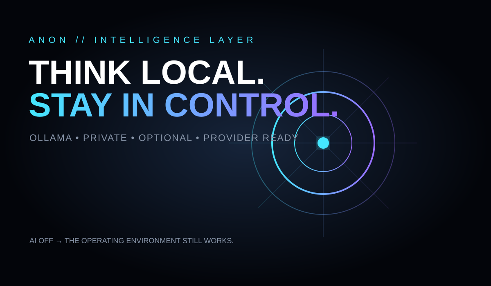

SEARCH FIRST
One command surface for Apps, Games, Files and System actions.
A Windows-native operating environment designed to feel like its own platform — a cinematic desktop shell, measurable performance layer, dedicated gaming surface and optional local intelligence.

Windows remains the compatibility foundation. ANON changes the layer users actually inhabit: command-first navigation, deliberate surfaces, live telemetry, reversible performance controls and a recovery-minded runtime.

Core, Carbon, Aurora, Pulse, Crimson, Minimal and Immersive share the same geometry, spacing, typography and interaction rules. Motion can yield to reduced-motion mode without changing the visual hierarchy.
One command surface for Apps, Games, Files and System actions.
Home, Files, Apps, Games, AI and System remain one gesture away.
Entrance, transition and hover motion reinforce hierarchy without slowing the shell.
Gaming Mode is a first-class surface: profiles, session state, telemetry and restoration belong together. The objective is not a collection of tweaks — it is a controlled state with a clear way back.

ANON AI is an optional intelligence layer. The default path is local Ollama with gemma3:4b. Providers are abstracted so a local model can be used without a cloud account, while AI failure cannot take down the desktop.
AI extends the operating environment. It does not become the operating environment.

The release path is an engineered chain: service Windows 11 25H2, inject the ANON payload and bootstrap, establish first-logon handoff, bridge WinPE to legacy Setup, assemble a BIOS + UEFI ISO and validate every gate before VM testing.
WIM-based Microsoft foundation and selected image index.
Shell, bootstrap, logs, registry policy and SetupComplete.
Legacy Setup handoff keeps the installer path compatible.
ISO assembly, hashes and validation gates before VM-first testing.